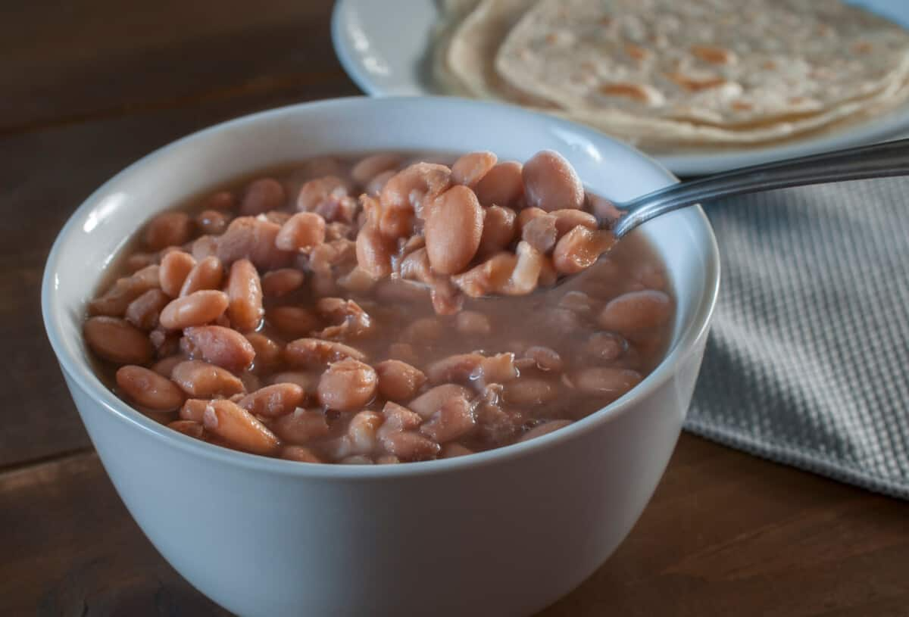

Frijoles de Olla

Description
A very simple and traditional recipes for frijoles de olla that you can eat straight from the pot or to meal prep
throughtout the week.
Ingredients
- 1/2 pound (225 g) dry beans, such as pinto, California pink, or black turtle
- 1/4 white onion, roughly sliced
- 1 heaped tablespoon lard or olive oil
- 1 Tbs chicken boullion
- Salt to taste
Steps
- Run the beans through your hands to pick out any small stones or pieces of earth.
- Rinse twice in cold water and drain.
- Put in a pot and cover with at least 3 inches of water.
- Add the onion and lard and bring to a simmer.
- Continue to simmer until the bean skins are soft, then add the salt, boullion, and continue cooking until the
beans are very soft and the broth is soupy.